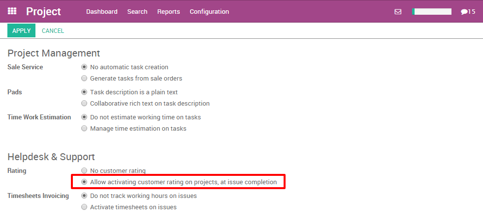
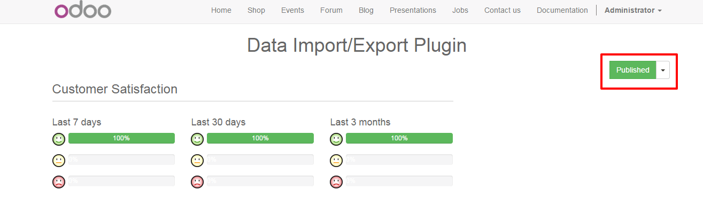

概述
作为经理，跟踪你的团队做的每一件事并不容易。得到客户的回复对于改善团队绩效是很有帮助的。你可以很轻松的通过客户使用YuanCloud来收集反馈。
在项目实施期间，可以发送邮件来获取客户反馈。他可以通过三种表情来评估你的工作（微笑，自然，悲伤）。
如何从客户处收集回馈
在做必要的设置之前，首先要安装“项目”这个模块。只需到应用程序界面下载并安装。

而且，在相同的界面，你也要安装“项目评级”模块。
下一步，进入后台项目模块。选择“设置”按钮并在下拉菜单中选择“设置”。然后选择“项目客户评级”，不要忘记保存设置。
如何获得客户反馈？
在项目进行期间，邮件可以在任何阶段发给客户。
首先，你需要选出从哪个项目你想得到回馈
项目配置
进入“项目”模块，在项目设置里面勾选“客户满意”选项。

Email 模板
去项目状态设置（点击这个图标，在状态栏的上方，然后选择”编辑“）。选择一个邮件模版，你也可以直接编辑。

这是一个客户可以收到的邮件的例子。

注解
客户只需要点击笑脸（微笑，自然，悲伤）来评价你的工作。客户也可以回复邮件并添加更多的信息。这将会在加入到任务的聊天室。
报表
你会在项目右上方有一个简要的概括。

如何在页面上展示等级评定。
首先有必要安装“网站构建器”模块。只需要去模块菜单下载并安装即可。
而且，在同一个菜单，你必须安装“项目问题网站评级”模块。

然后，你就能够可以在网站上公布你的结果了，你可以在网站右上角上点击确认按钮。
